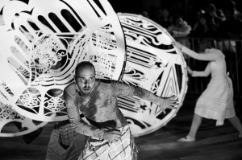

Visual dance theatre workshop with Mystorin Theatre Group - AVLYST
- Dato:
- 22.11.2013 til 22.11.2013
- Start kl :
- 11:00
- Slutt kl :
- 14:00
- Pris:
- 200,-
- Adresse:
- Jødisk museum i Oslo, Calmeyersgate 15 B, Oslo
 OBS: Kurset med Mystorin er dessverre avlyst.
{kind=link}
The Mystorin Theater Group is the Israeli theater group that brings the beauty of ancient Hebrew texts to Israeli and international audiences creating a unique theatrical poetry. They are visiting Rumifestivalen at Riksscenen with their performance Dreams of Moses (Sunday 24th November). Norsk Skuespillersenter collaborates with Rumifestivalen and Jødisk Museum i Oslo offering a 3-hour workshop with this unique company.
Included in the workshop fee is free tickets for the Dreams of Moses at Riksscenen!
Visual and mystical theatre
The original theatrical language of the Mystorin group is rich in visual images, full of different meanings and interpretations. Through video, movement, singing and visual theatre the performances of the Mystorin group reflect the narrative of ancient texts and communicate with the audience both as a story and as a total mystical experience with a strong emotional impact.
From ancient texts to scenic movement
As part of the creative process actors study ancient texts and artists’ personal interpretations of these texts are incorporated into the performance. This unique approach, which combines methods of traditional Jewish learning with improvisation, has been developed by the Mystorin group throughout its previous artistic projects and gives new insight into the sophisticated world of ancient poetry.
About the company
The group has with great success performed at international festivals such as INFANT theatre festival in Serbia, HIGHFEST in Armenia, Sibiu festival in Romania and others in Findland, Africa, Russia and Poland. Artistic director of Mystorin Theatre Group is Yulia Ginis. You can find Mystorin on Myspace and YouTube.
Practical information
The workshop will be held in English and will take place at Jødisk Museum i Oslo in Calmeyersgate 15B.
Pris for medlemmer av NSF: 150,-